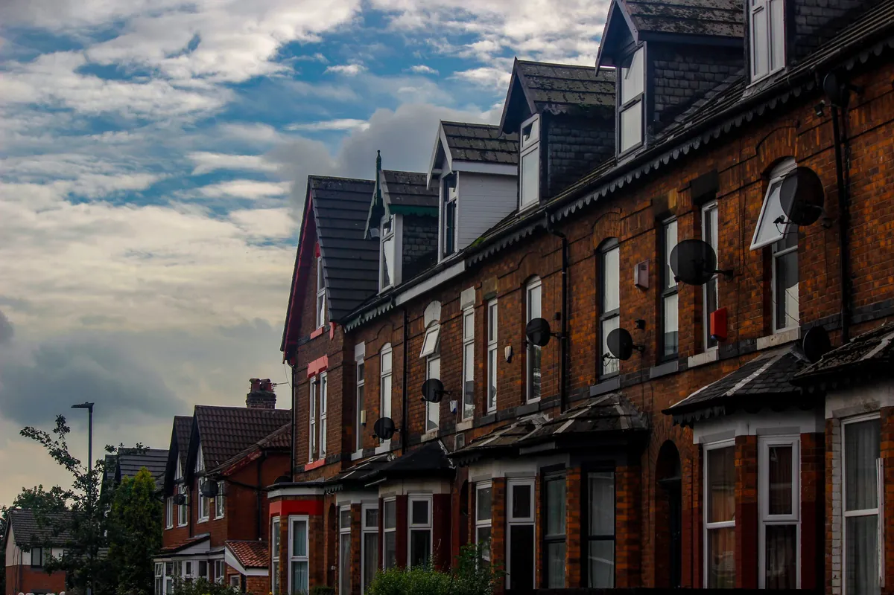
Manchester born and bred
I grew up here, I work here, and most of the businesses I help are a short drive away.
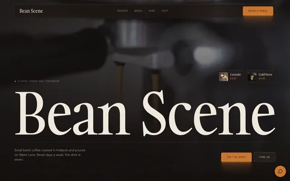
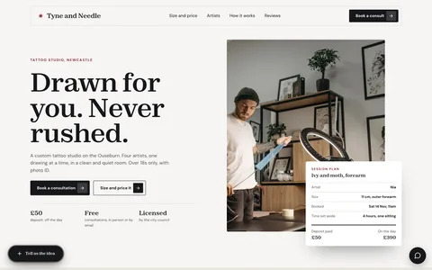
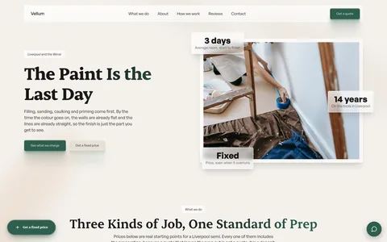
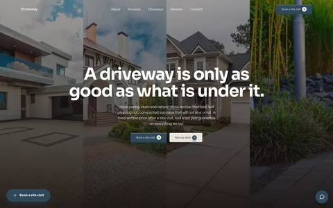
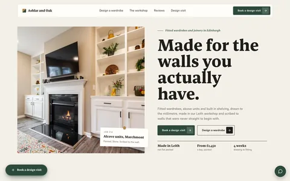
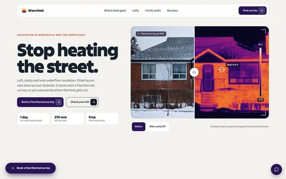
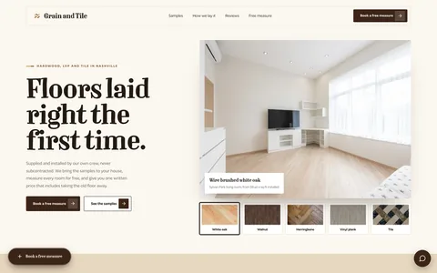
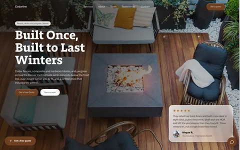
The little pictures are sites I've built. Tap one.
I build websites for local businesses in Manchester, and the bits behind them that bring in more work.
A bit about me
No agency, no account managers. Just me, from first call to finished site.

I grew up here, I work here, and most of the businesses I help are a short drive away.
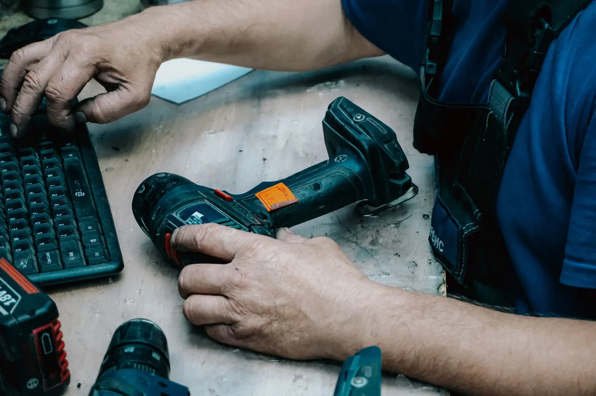
I worked in the trades before this, so I know what a busy week looks like and how enquiries slip through.
Websites, instant replies to new enquiries, and review requests that go out on their own.
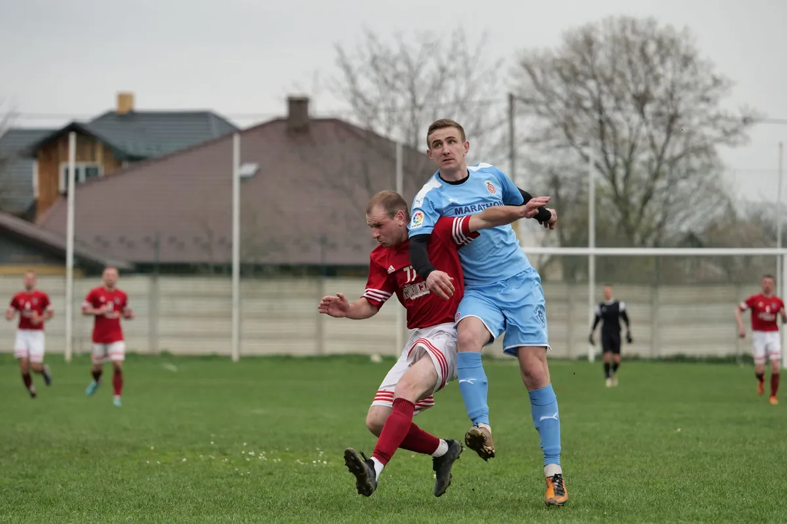
If I'm not building something, I'm on a pitch somewhere in Greater Manchester.
Recent work
These are live. Tap any of them to have a look around.
Tree surgeons, Manchester
A crown diagram that shows what each job takes off, and a pruning calendar.
Junk removal, Manchester
Numbered services, the team, and a quote form that's always one tap away.
Windows and doors, Cardiff
Design your front door in six colours and three styles before you call.
Locksmith, Birmingham
Prices hung on brass key tags, and a 2am callout told minute by minute.
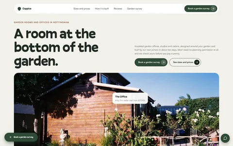
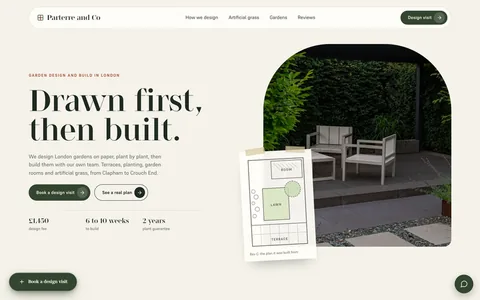
Book a free 15 minute call. I'll have a look at how people find you now and tell you what I'd change.
Book a 15 minute call